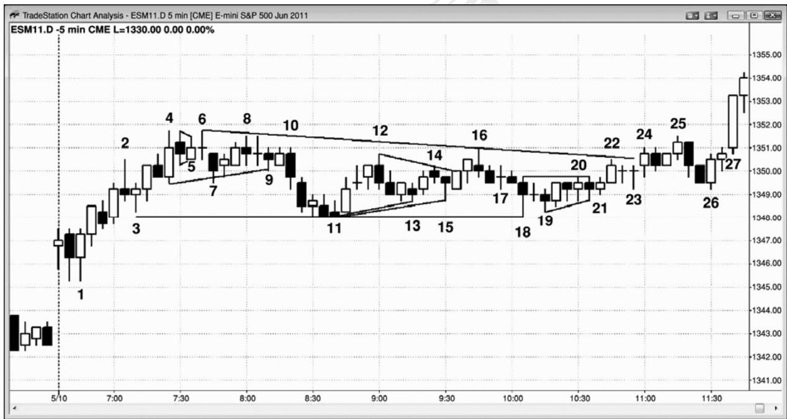
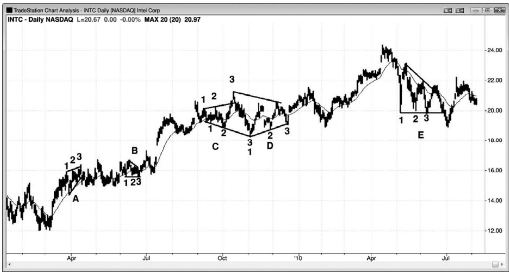

第23章 三角形¶
第 23 章 三角形
三角形是交易区间，所以也是通道，因为它们也是包含在两条线之间的价格行为区域。交易区间可以叫做三角形的最低要求是，它拥有三次上推或下推。由于它们要么拥有更高低点或更低高点，要么像在扩张三角形中那样同时拥有更高低点和更低高点，所以它们也拥有一些趋势行为。楔形是三角形，要么是上升三角形，要么是下降三角形。当它们几乎不倾斜时，交易者们喜欢把它们称作三角形，但是，当斜率较大时，他们通常把它们称作楔形。多头或空头旗形可能是楔形，而且通常只是成为一个延续形态。楔形也可能出现在趋势的终点，形成一个反转形态。因为它们的行为更像是旗形或反转形态，而不是传统的三角形，所以它们将在那些章节讨论，而不是在这里。
扩张三角形包含于两条发散的轨线之间，两条直线从技术上讲都是趋势通道线，因为上轨线位于多头趋势中的高点之上（更高高点），下轨线位于空头趋势的低点下方（更低低点）。oo（外包－外包）形态，一条外包棒之后形成一条更大的外包棒，是一种小型的扩张三角形。收缩三角形包含于两条趋势线之间，因为市场同时位于小型空头趋势和小型多头趋势中。ii形态通常是更低时间框架图表上的小型三角形。上升三角形的上侧是一条阻力线，下侧是一条多头趋势线；下降三角形的下侧是一条支撑线，上侧是一条空头趋势线。楔形是上升或下降的通道，趋势线和趋势通道线是逐渐收敛的，它是三角形的一个变种，所以也是一种通道。所有三角形都至少拥有一个方向上的三条腿和另一方向上的两条腿，拥有三条腿、横向或倾斜，而且外形像楔形的每个形态都是三角形。不像趋势通道和交易区间可以无限期地延伸下去，当市场处于三角形内时，它是处于突破状态，也就是说突破即将发生。突破或强或弱；它可能拥有紧凑到底，最终形成一轮趋势，也可能失败并反转，也可能只是横盘运动，演变为一个更大的交易区间。
像所有交易区间一样，三角形是趋势中的一次暂停，突破通常发生在三角形之前的趋势方向上。多头趋势中的三角形通常向上突破，空头三角形通常向下突破。楔形可能比较复杂。空头楔形是向下倾斜的楔形，像所有空头通道一样，是一种多头旗形。当向下倾斜的楔形出现在更大的多头趋势内时，向上突破是在更大趋势的方向上，正如预期。但是，大型空头楔形可能占据整个屏幕，在那种情况下，屏幕上的棒线是处于空头趋势中。于是，向上突破成了反转，是与屏幕上的趋势相反的突破。屏幕左侧是否有清晰的大型多头趋势，都没有关系。任何一个下降楔形的都像是多头趋势中的一波大型回撤，也就是说它的行为就像是一个多头旗形。向上突破是对屏幕上的空头趋势的反转，但那不是在预期的方向上，因为每条空头通道，无论通道线是否收敛并形成楔形，其作用都像是一个多头旗形，并且应该看作一个多头旗形。实际上，大部分是更高时间框架图表上的多头旗形。
每个具有三推的交易区间，其作用与三角形一样。大部分是三角形，但有一些不具有清晰的三角形外形。但是，由于它们的行为刚好像是三角形，所以在交易时应该当作完美的三角形。因为它们比单推回撤（高点 1 和低点 1 回撤）和两推回撤（高点 2 和低点 2 回撤）复杂，所以它们代表着更强的逆势压力。由于反方向的交易者们正变得越来越强，所以这些形态一般形成于趋势或波段的晚期，而且常常成为最终旗形。如果一个三角形拥有三个以上的上推或下推，那么大部分交易者开始把调整称作交易区间。
如果某个形态是倾斜的，而且拥有三推，那么很多交易者会错误地认为它是一个楔形而去寻找反转。但是，正如第 18 章中关于楔形的讨论，如果三推形态是在紧凑通道内，那么该形态通常像是一条通道，会无限期地延续，而不是像楔形一样反转。但是，仅仅因为一个楔形包含三推，并不足以作为反向交易的理由。当交易者们不确定楔形是否即将反转时，他们不应在突破入场。举例说明，如果有一条相当陡峭的下降通道，趋势线和趋势通道线是收敛的，但彼此靠得很近，那么交易者们不应在第一个向上反转或者楔形的多头突破买进。他们应该等待，直到多头突破发生，然后研判突破的强弱。如果突破很强（强突破的特征在第 2章讨论过），那么他们应该等待回撤，然后在回撤的终点入场（突破回撤买进）。如果连续几棒都没有回撤，那么市场就是正在形成一个强多头尖峰，几乎可以肯定，在大部分交易者眼中，市场已经变为总在场内多头。然后，他们可以像其他任意强突破一样交易。他们可能在一棒的收盘买进，在前一棒的高点上方买进，使用限价单在任意的小型回撤买进，或者等待回撤。
P216
由于大部分三角形相对水平，所以多空双方处于平衡状态，也就是说双方都在这一价位看到价值。因此，突破幅度常常不会太大，然后便返回区间之内，而且三角形常常是趋势中的最终旗形。如果突破失败，那么市场通常会被吸引至交易区间内部，有时向另一侧突破，成为一波两条腿调整，甚至是趋势反转。这种交易区间行为在关于交易区间的第四部分进行更细致地讨论。
由于上升、下降和对称三角形拥有相同的交易应用，所以对于它们不必区分，都可以把它们作为三角形。所有这些三角形基本上都是水平的。它们倾向于在它们之前的趋势方向上突破的可能性略大，但是不足以根据这一点来交易。由于每一种三角形都是一种交易区间，所以都是充满不确定性的区域，在设定交易前最好等待突破。然而，当该形态足够高时，你可以像交易区间一样交易，在极点处做反向交易，准备在底部买进，在顶部卖出。突破常常失败，而且像对任何通道的突破一样，如果市场返回通道内，它通常会测试通道另一侧。如果市场向任一方向突破，那么突破通常会引出一波测量运动，测量运动的幅度近似等于通道的高度。如果市场超越那个测量运动目标，那么很可能已经进入一轮趋势。
扩张三角形可能是趋势终点的反转形态，也可能是趋势内的延续形态。一旦它们突破，突破常常失败，市场然后反转，向另一侧突破，甚至形成一个更大的扩张三角形。于是，扩张三角形反转成为一个延续形态，扩张三角形延续形态成为一个反转。举例说明，如果空头趋势底部出现一个扩张三角形，那么它是一个反转形态。一旦市场上涨，突破三角形的顶部，那么突破常常失败，然后市场再次向下反转。结果形成一个大型扩张三角形空头旗形。有时，扩张三角形可能引起重要反转，但通常它更像是交易区间，并且演变为另外某种形态。我将在第三本书中关于趋势反转形态的章节对它们进行更详细地讨论。

大部分交易者把三角形简单地看作包含三个或更多上推或下推的交易区间。如果它的推数开始超过 5 个，那么大部分交易者不再把它叫做三角形，而只是把那个形态叫做交易区间。你叫它什么并不重要，因为所有交易区间的行为都是相似的。
大部分 ii 形态，比如图 23.1 中棒 5、棒 24 和棒 25 前一棒处的 ii 形态，都应看作小型三角形，因为大部分都是较小时间框架图表上的三角形。
棒 4、7 和 9 的低点是一个横向形态中的三次下推，形成一个三角形。棒 4、6 和 8 的高
点形成三次上推，所以也形成一个三角形。
棒3、11（或者它前面两棒中的任意一棒）与13、15或18，形成三次下推，有些交易者把它看作一个三角形。棒 26 是一个双棒反转突破回撤买进架构，形成于棒 24 突破从棒 3 到棒18的大型三角形之后。
棒 18、棒 19 和棒 20 后一棒的低点形成三次下推。棒 18 后面的十字星棒的高点、棒 19后面的多头棒、以及棒 20，形成三次上推，构成一个三角形。棒 23 是棒 22 向上突破那个三角形之后的回撤。

图 23.2 所示英特尔（INTC）的日线图中包含多个三角形，几乎没有哪个是完美的。三角形 A 是一个上升楔形。突破没有动能，该形态演变为一段紧凑的交易区间。当市场突破反弹过程中的一个上升楔形，但是没有下跌，而是横向整理时，那是一种力量的征兆，多头很可能会卷土重来。如果空头看到多头趋势中的一个上升楔形，而且他们没有能力令市场向下反转，那么他们会很快买进他们的空头头寸，等待再次做空。这使得市场成为单向市场，向上突破至一个空头愿意再次做空，多头愿意部分或全部获利了结的价位。
三角形 B 和 E 都是下降三角形，三角形 B 向上突破。三角形 E 首先向上突破，然后突破失败。然后向下突破，突破再次失败。
三角形 C 是一个扩张三角形。交易者们可能会在棒 3 高点做空。扩张三角形顶部通常演变为扩张三角形底部，反过来也一样，这个三角形便是一个很好的例子。交易者们可能会在
棒3低点上方买进。
三角形 D 是一个不完美的对称三角形。由于对称三角形就是交易区间，所以交易者们可能会在市场向下测试多头趋势线时买进，在向上测试空头趋势线时做空。
第五部分 订单和交易管理
仅仅知道怎样阅读图表，并不意味着你能够以交易为生。对于交易的入场和出场，你雪要有一套健全的计划，对于持有的每个头寸，你都不得不随时做出决定。